Fruits Description
Tropical Fruits
Mango
Mango is a tropical fruit renowned for its sweet, juicy, and aromatic flesh. Belonging to the genus Mangifera, it is native to South Asia but is now grown in various tropical and subtropical regions worldwide.
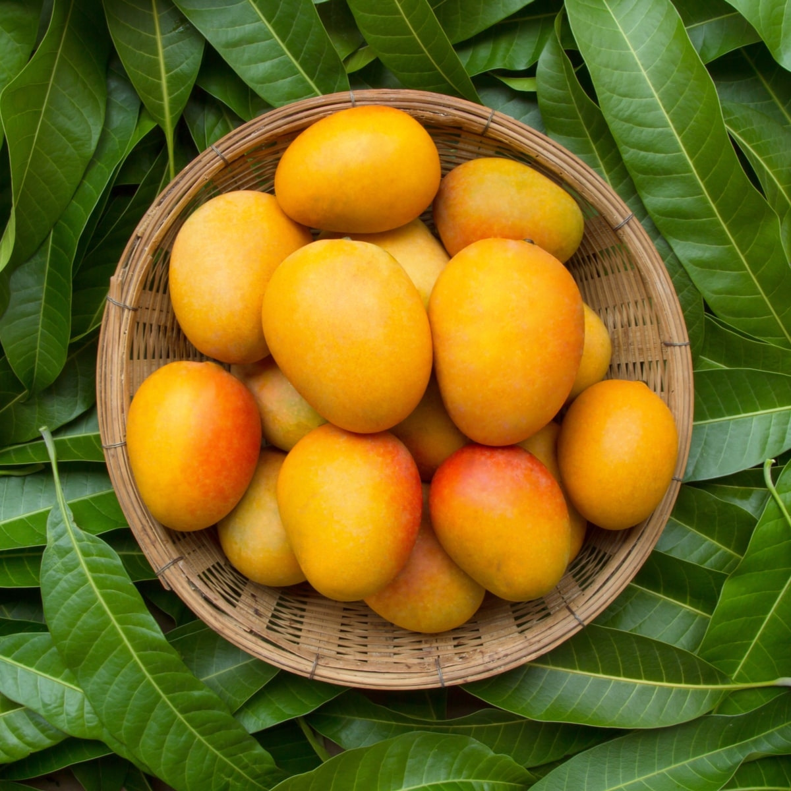 Rate it!!Banana
Banana is a popular tropical fruit known for its distinctive elongated shape, sweet taste, and creamy texture. Belonging to the genus Musa, it is native to Southeast Asia but is now grown in many warm and tropical regions around the world.
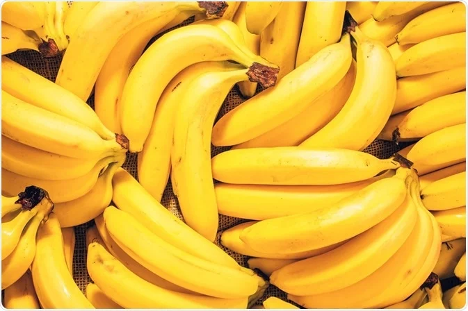 Rate it!!Guava
Guava is a tropical fruit with a unique flavor and aromatic fragrance. It belongs to the Myrtaceae family and is native to Central America, but it is now widely cultivated in tropical and subtropical regions around the world.
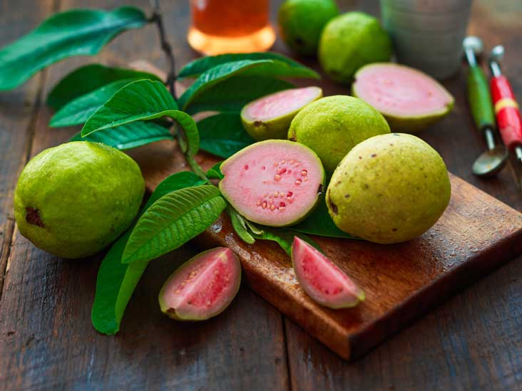 Rate it!!Papaya
Papaya is a tropical fruit renowned for its vibrant color, soft texture, and sweet, musky flavor. It belongs to the Caricaceae family and is native to Central America and Mexico. Today, papaya is grown in various warm regions worldwide, including parts of Asia, Africa, and the Caribbean.
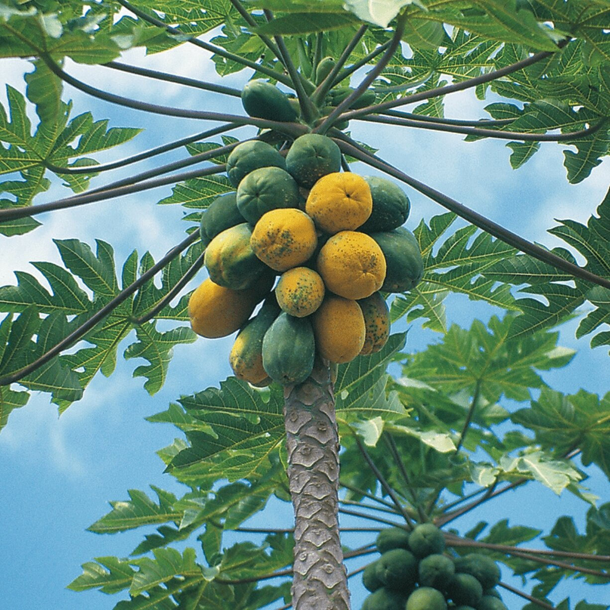 Rate it!!Jackfruit
Jackfruit is a large tropical fruit known for its immense size, distinctive appearance, and unique flavor. It belongs to the Moraceae family and is native to South Asia, primarily found in countries like India, Bangladesh, and Sri Lanka. Jackfruit trees are large, evergreen trees with glossy green leaves and can bear multiple fruits simultaneously.
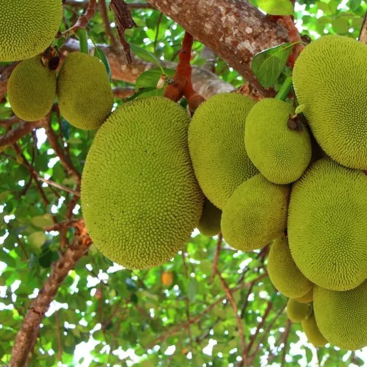 Rate it!!Citrus Fruits
Orange
Oranges are vibrant and refreshing citrus fruits, widely recognized for their bright color, juicy pulp, and zesty flavor. Belonging to the Rutaceae family, oranges are believed to have originated in Southeast Asia and are now extensively grown in warm regions across the globe.
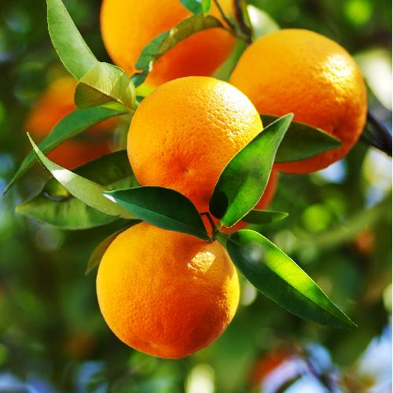 Rate it!!Lemon
Lemons are bright and tangy citrus fruits, renowned for their refreshing flavor and numerous culinary and medicinal uses. Belonging to the Rutaceae family, lemons are thought to have originated in Southeast Asia and are now grown in various subtropical and Mediterranean regions.
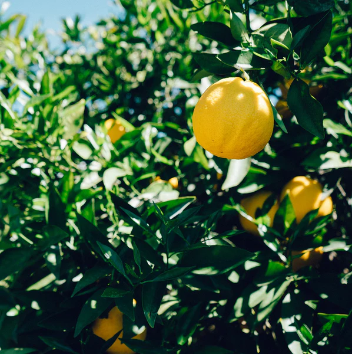 Rate it!!Lime
Lime is a small, green citrus fruit known for its tart and tangy flavor. Belonging to the Rutaceae family, limes are native to Southeast Asia but are now cultivated in many tropical and subtropical regions around the world.
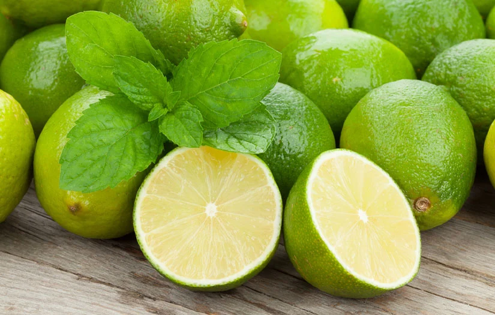 Rate it!!Sweet Lime
Sweet lime, also known as sweet lemon or mitha nimbu, is a citrus fruit belonging to the Rutaceae family. It is a hybrid between a mandarin and a lemon, resulting in a fruit with a unique and mild flavor profile. Sweet limes are commonly grown in subtropical and tropical regions.
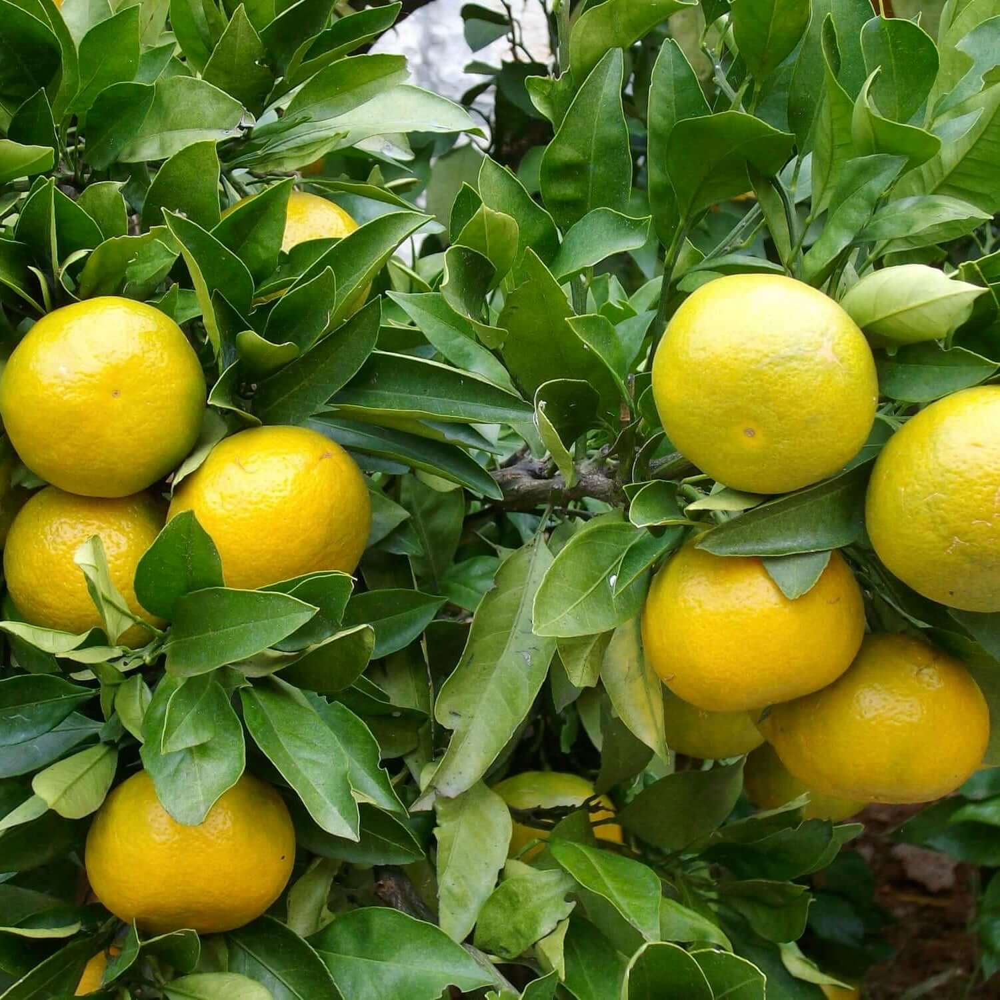 Rate it!!Stone Fruits
Peach
Peach is a delicious and fragrant fruit known for its sweet and juicy flesh. Belonging to the genus Prunus, peaches are part of the Rosaceae family and are believed to have originated in China. Today, they are grown in various temperate regions around the world.
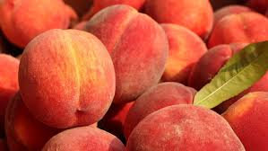 Rate it!!Plum
Plum is a juicy and flavorful fruit known for its rich, sweet-tart taste and vibrant colors. Belonging to the genus Prunus, plums are part of the Rosaceae family and are native to various regions across Europe, Asia, and North America. They are now cultivated in many temperate regions around the world.
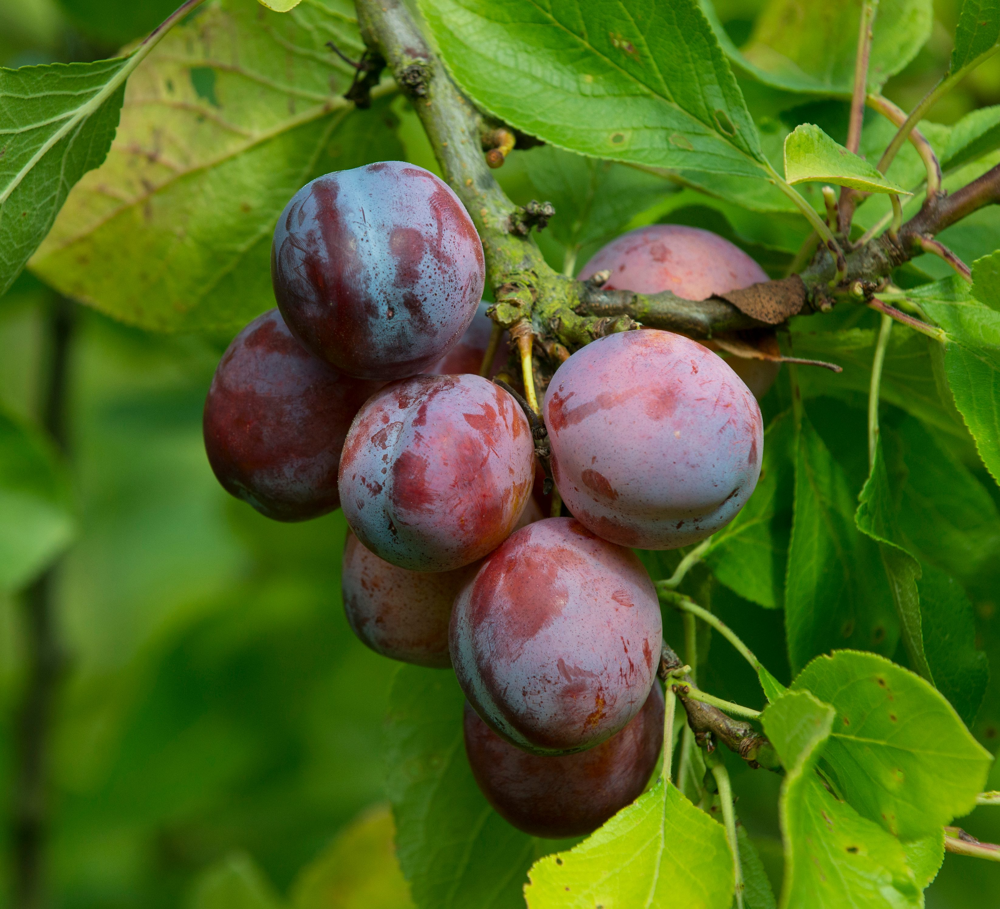 Rate it!!Apricot
Apricot is a small, golden-orange fruit known for its sweet and slightly tart flavor. Belonging to the Prunus genus, apricots are part of the Rosaceae family and are believed to have originated in China. They are now widely grown in temperate regions around the world.
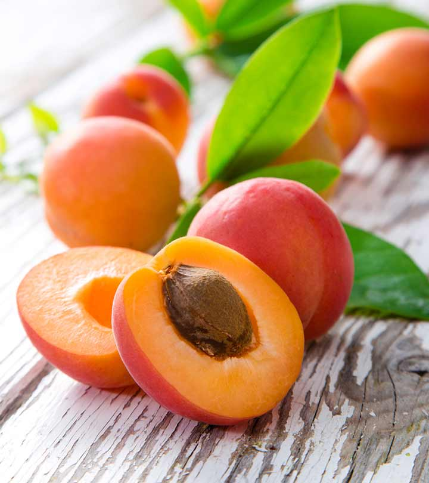 Rate it!!Cherry
Cherry is a small, vibrant fruit known for its sweet and tart flavor. Belonging to the genus Prunus, cherries are part of the Rosaceae family and are native to temperate regions in the Northern Hemisphere. They are cultivated in many countries around the world, with various cherry varieties available.
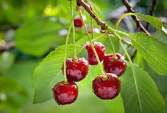 Rate it!!Berries
Strawberry
Strawberry is a luscious and juicy fruit known for its sweet and slightly tangy flavor. Belonging to the Fragaria genus, strawberries are part of the Rosaceae family and are native to temperate regions in both the Northern and Southern Hemispheres. They are now widely cultivated around the world, making them one of the most popular and beloved berries.
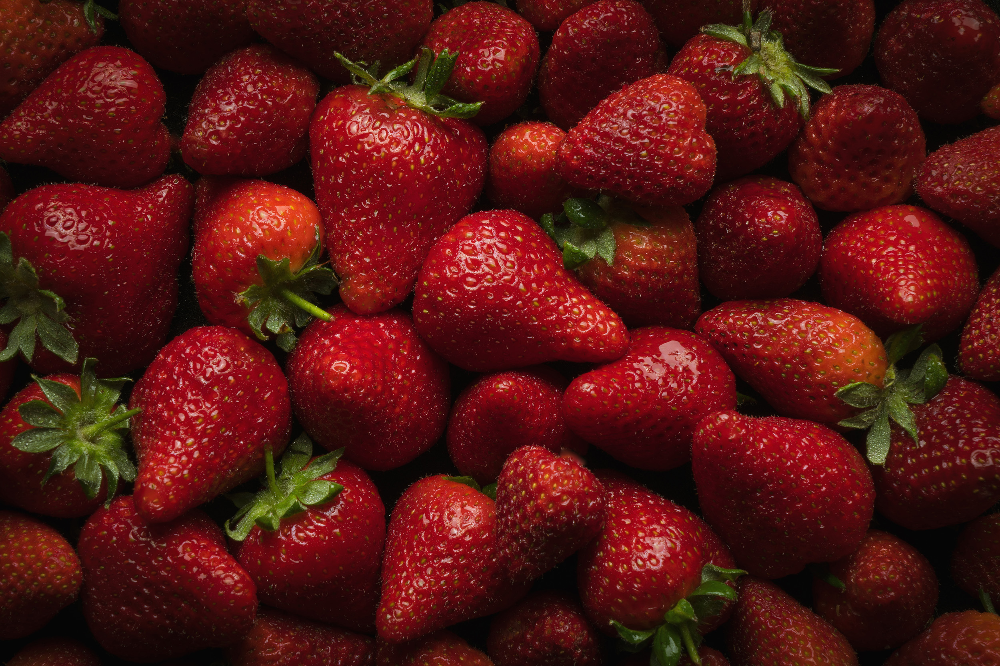 Rate it!!